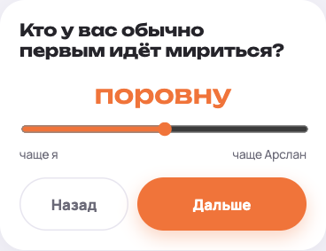
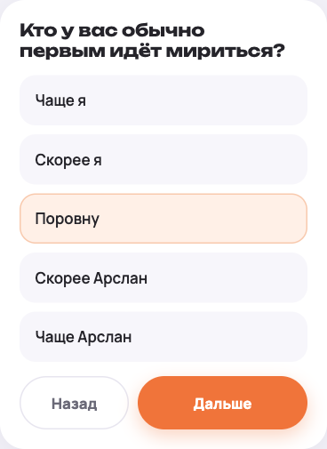
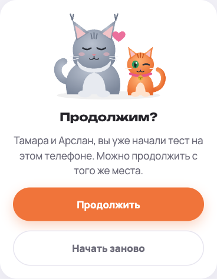
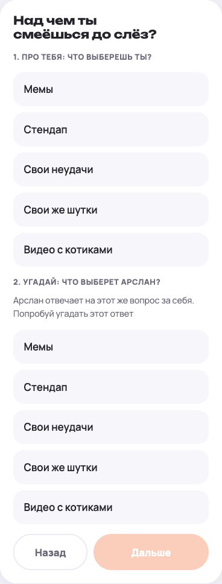
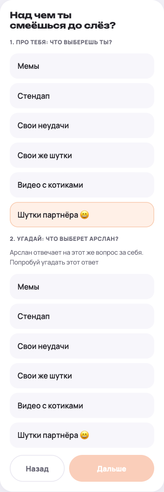
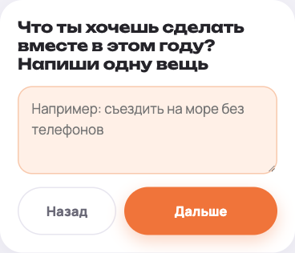
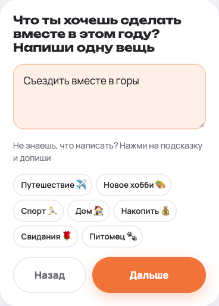
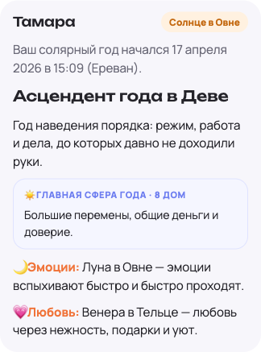
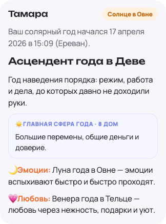

Спасибо вам с Арсланом за подробные голосовые. Почти всё, о чём ты говорила, уже поправили. Ниже — как было и как стало.
«Надо было жать, а не тянуть. Начинаешь тянуть — он сбрасывается, и можно просто выйти из теста»
Во встроенном браузере Telegram ползунки правда ведут себя плохо, а свайп может закрыть окно. Ползунков больше нет: везде обычные кнопки, на них просто нажимаешь.


Теперь ответы сохраняются на телефоне. Если окно случайно закрылось, открываешь ссылку заново, и тест предложит продолжить с того же места. Ответы по-прежнему никуда не отправляются.

«Я бы добавила шутки партнёра — это то, что я хотела ответить, а этого не было»
Добавили. А если оба выберут этот вариант, в разборе будет отдельный вывод: «вы смеётесь над шутками друг друга».


«Тут мы оба прям очень долго думали. Нужны хотя бы подсказки по сферам»
Под полем появились подсказки. Нажимаешь, например, «Путешествие», и в поле появляется «Съездить вместе в…», остаётся дописать.


«У меня Луна в Близнецах, а тут что-то другое — появился скепсис, что это не точно»
Ты угадала: это Луна и Венера года. Соляр строится на момент, когда Солнце возвращается в точку твоего рождения, то есть на день рождения в этом году. Луна и Венера к этому моменту стоят уже в других знаках, поэтому с натальной картой они не совпадают. Это нормально, но раньше в тесте об этом не было ни слова. Теперь подписано «Луна года», «Венера года», а внизу есть пояснение.


На скриншотах выдуманные даты рождения, просто для примера. Ваш соляр будет другим.
Больше смешной инфографики в разборе и «личные ред-флаги» каждого. Идея классная, сделаем в одной из следующих версий.